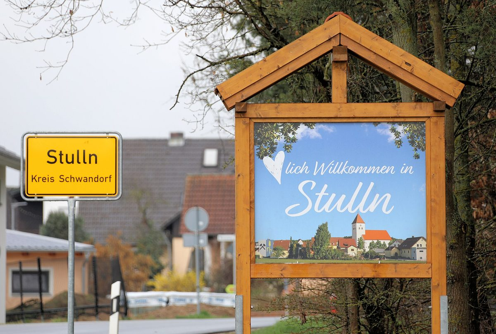

독일 바이에른 시민에너지협동조합 bemo, 조합원 400명에 3% 배당

군과 관내 기초지자체 3분의 1도 조합원…1MWp 태양광 착공·풍력 1기 투자 계획으로 신규 가입 다시 열어
독일 바이에른주 슈반도르프(Schwandorf) 군의 시민에너지협동조합 뷔르거에너지 미틀레레 오버팔츠(Bürgerenergie Mittlere Oberpfalz eG, bemo)가 19일 슈툴른(Stulln)에서 연 총회에서 조합원 400명에게 3%를 배당하기로 했다. 조합은 2025년 말 이익 9만6,897유로 가운데 8만7,580유로를 조합원에게 나누고 나머지는 다음 회계연도로 넘기기로 만장일치로 의결했으며, 2025년 대차대조표 총액은 대출 상환으로 줄어든 404만9,000유로였다. 15년 전 군의 도움으로 세워진 bemo는 태양광 9기와 풍력 2기를 운영하고 있고, 군 자체와 군내 기초지자체의 3분의 1도 조합원으로 참여하고 있다. 부르글렝겐펠트(Burglengenfeld) 란첸리트(Lanzenried)에서는 자금 조달을 마친 1MWp 지상 태양광이 최근 착공했고, 같은 도시에 풍력발전기 1기 투자를 계획하면서 그동안 막혀 있던 신규 조합원 가입도 다시 열 수 있게 됐다. 출자 1좌는 500유로이며, 나중에 들어오는 조합원에게 물리던 3% 가입 할증금은 최근 없앴다. 창립 때부터 활동해 온 한스 프레히틀(Hans Prechtl) 부군수는 지역의 부가가치를 군 안에 남기고 자기 지붕이 없는 주민도 태양광에 투자할 수 있게 하려고 조합을 세웠다고 돌아봤다.
시민에너지 관점
조합원 400명이 올해 3% 배당을 받고, 군과 관내 지자체 3분의 1이 함께 출자한 구조가 15년을 이어 왔다는 것은 시민과 지자체가 같은 발전소의 주인이 되는 모델이 오래갈 수 있음을 보여 준다. 배당률이 높지 않다는 지적도 있을 수 있지만, 1좌 500유로로 지붕이 없는 주민까지 참여하고 수익이 군 밖으로 빠져나가지 않는다는 점이 이 모델의 핵심이다. 지자체가 조합원으로 들어가 신뢰를 보태고 시민이 출자로 주인이 될 때, 재생에너지는 외부 사업자의 개발 대상이 아니라 지역의 공동 자산이 된다. 국내 지자체도 시민 협동조합에 직접 출자하고 공공부지를 우선 내주는 공동 소유 모델을 제도로 열어야 한다.
출처: OberpfalzECHO 2026-10-20 Redaktion 원문 보기
独バイエルンの市民エネルギー協同組合bemo、組合員400人に3%配当
郡と郡内の基礎自治体の3分の1も組合員…1MWpの太陽光着工と風車1基への投資計画で新規加入を再開
ドイツ・バイエルン州シュヴァンドルフ（Schwandorf）郡の市民エネルギー協同組合ビュルガーエネルギー・ミットレレ・オーバープファルツ（Bürgerenergie Mittlere Oberpfalz eG、bemo）は、19日にシュトゥルン（Stulln）で開いた総会で、組合員400人に3%を配当することを決めた。組合は2025年末の利益9万6,897ユーロのうち8万7,580ユーロを組合員に分配し、残りを次の会計年度に繰り越すことを全会一致で議決し、2025年の貸借対照表の総額は借入金の返済により減少して404万9,000ユーロとなった。15年前に郡の後押しで設立されたbemoは太陽光発電所9基と風車2基を運営しており、郡そのものと郡内の基礎自治体の3分の1も組合員として参加している。ブルクレンゲンフェルト（Burglengenfeld）のランツェンリート（Lanzenried）では資金調達を終えた1MWpの地上設置型太陽光が最近着工し、同じ市で風車1基への投資を計画したことで、これまで止めていた新規組合員の受け入れも再開できるようになった。出資は1口500ユーロで、後から加入する組合員に課していた3%の加入割増金は最近廃止された。設立当初から関わってきたハンス・プレヒトル（Hans Prechtl）副郡長は、地域の付加価値を郡内にとどめ、自宅に屋根を持たない住民も太陽光に投資できるようにするために組合をつくったと振り返った。
市民エネルギーの視点
組合員400人が今年3%の配当を受け、郡と郡内自治体の3分の1がともに出資する仕組みが15年続いてきたことは、市民と自治体が同じ発電所の所有者となるモデルが長続きし得ることを示している。配当率が高くないという指摘もあり得るが、1口500ユーロで屋根を持たない住民まで参加でき、収益が郡の外に流れ出ないことこそがこのモデルの核心だ。自治体が組合員として加わって信頼を補い、市民が出資によって所有者になるとき、再生可能エネルギーは外部事業者の開発対象ではなく地域の共有資産になる。韓国の自治体も市民協同組合に直接出資し、公有地を優先して提供する共同所有モデルを制度として開くべきだ。
出典: OberpfalzECHO 2026-10-20 Redaktion 原文を読む
德国巴伐利亚市民能源合作社bemo向400名社员分红3%
县政府和县内三分之一的基层市镇也是社员，1MWp光伏开工、计划投资1台风机，重新开放新社员加入
德国巴伐利亚州施万多夫（Schwandorf）县的市民能源合作社Bürgerenergie Mittlere Oberpfalz eG（bemo）19日在施图伦（Stulln）召开全体大会，决定向400名社员分红3%。合作社全票通过决议，从2025年底的利润96,897欧元中拿出87,580欧元分配给社员，其余结转至下一财年；由于偿还贷款，2025年资产负债表总额减少至4,049,000欧元。bemo于15年前在县政府的扶持下成立，目前运营9座光伏电站和2台风机，县政府本身和县内三分之一的基层市镇也都是社员。在布尔格伦根费尔德（Burglengenfeld）的Lanzenried，一座已完成融资的1MWp地面光伏电站近日开工；合作社还计划在该市投资1台风机，因此此前暂停的新社员加入也可以重新开放。每股出资500欧元，此前对后加入社员收取的3%入社附加费已于近期取消。从创立起就参与合作社的副县长Hans Prechtl回顾说，成立合作社是为了把地方的增加值留在县内，并让自家没有屋顶的居民也能投资光伏。
市民能源视角
400名社员今年获得3%的分红，县政府和县内三分之一的市镇共同出资的结构延续了15年，说明市民和地方政府共同成为同一座电站主人的模式可以长期运转。也许有人认为分红率不高，但每股500欧元就能让没有屋顶的居民也参与进来，收益不流出县外，这才是这一模式的核心。当地方政府以社员身份加入、增添信任，市民通过出资成为主人时，可再生能源就不再是外部企业的开发对象，而是地方的共同资产。韩国的地方政府也应直接向市民合作社出资，并以制度开放优先提供公共用地的共同所有模式。
来源: OberpfalzECHO 2026-10-20 Redaktion 查看原文
Bavarian citizen energy cooperative bemo pays 3 percent dividend to 400 members
The district and a third of its municipalities are members; a 1 MWp solar project breaks ground and a planned wind turbine reopens membership
Bürgerenergie Mittlere Oberpfalz eG (bemo), a citizen energy cooperative in the Schwandorf district of Bavaria, Germany, decided at its general meeting in Stulln on the 19th to pay a 3 percent dividend to its 400 members. Members voted unanimously to distribute 87,580 euros of the 96,897-euro profit at the end of 2025 and carry the rest forward, while the 2025 balance sheet total fell to 4,049,000 euros as loans were repaid. Founded 15 years ago with help from the district, bemo runs nine solar installations and two wind turbines, and the district itself and a third of its municipalities are among its members. A fully financed 1 MWp ground-mounted solar plant recently broke ground in Lanzenried in the town of Burglengenfeld, and a planned investment in a wind turbine in the same town means the cooperative can lift its freeze on new members. A share costs 500 euros, and a 3 percent surcharge once charged to later joiners was recently scrapped. Deputy district administrator Hans Prechtl, involved since the founding, recalled that the cooperative was set up to keep value creation in the district and let people without their own roof invest in solar.
Citizen Energy View
Four hundred members receiving a 3 percent dividend this year, in a structure co-owned with the district and a third of its municipalities for 15 years, shows that a model in which citizens and local governments own the same plants can last. Some may say the return is modest, but the heart of the model is that a 500-euro share lets even people without a roof take part and the profits stay in the district. When local governments join as members to lend trust and citizens become owners through their shares, renewable energy becomes a shared local asset rather than a target for outside developers. Korean local governments should be allowed to invest directly in citizen cooperatives and give them priority access to public land under a co-ownership model.
Source: OberpfalzECHO 2026-10-20 Redaktion Read the original